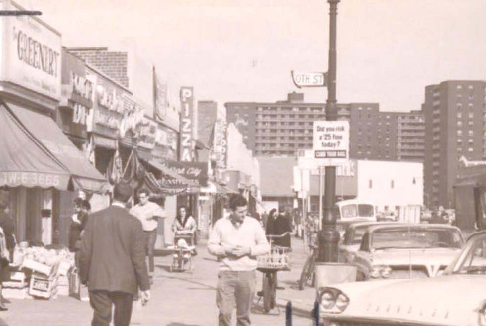

History
Brief Introduction
Rego Park is a neighborhood in New York City, New York with a population of 53,634.
Rego Park gets its name from the Real Good Construction Company,
which began residential development in the area in the 1920s, combining the first two letters of “Real” and “Good.”
Rego Park is in Queens County and is one of the best places to live in New York.
Living in Rego Park offers residents a dense urban feel and most residents rent their homes, but its environment is family-friendly and full of life.
Watch Videos to Learn More About the History of Rego Park:
Comparison of Past and Present
 Then
Then
 Now
Now

Then
Then